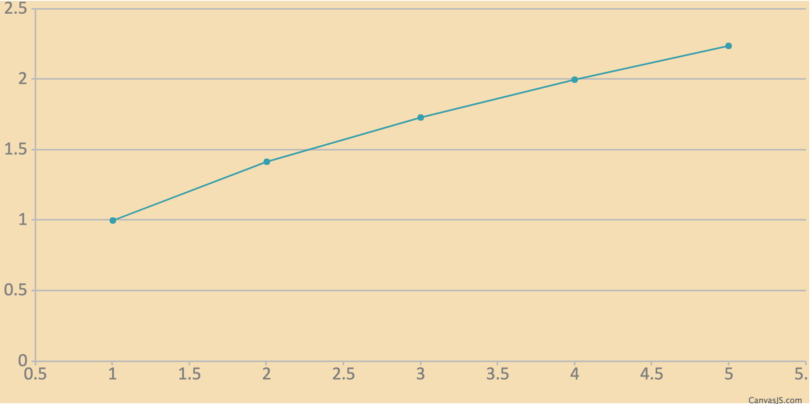
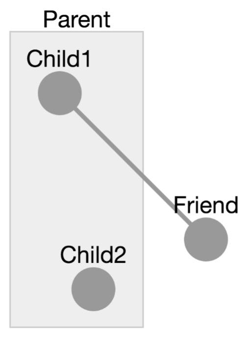
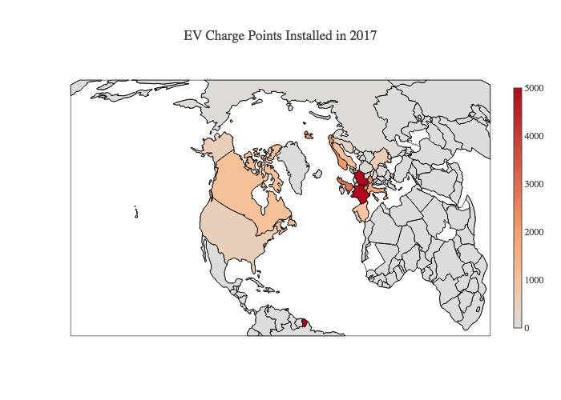
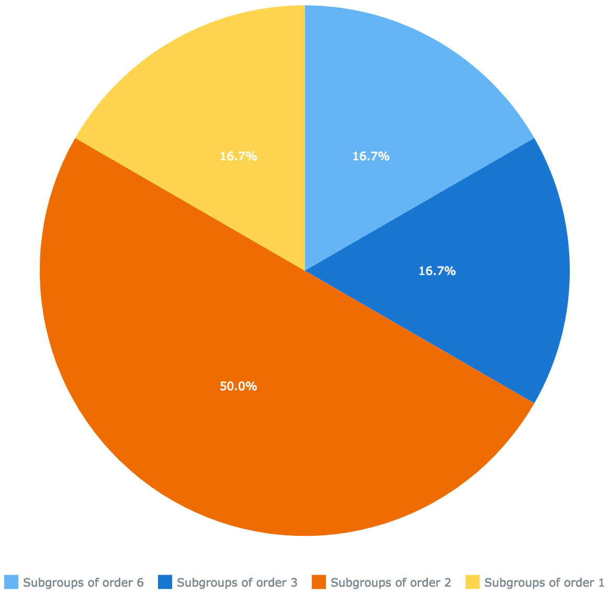
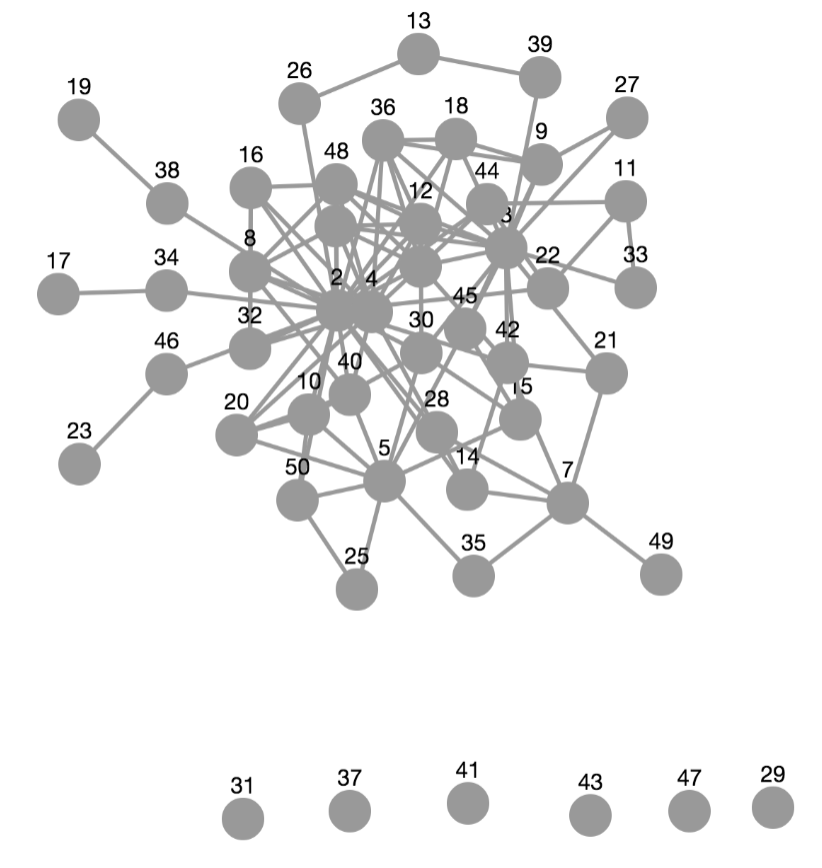

CreateVisualization functionThe low-level API is accessed through just one function, CreateVisualization (7.2-5). You can view its complete documentation in the function reference in Chapter 7, but examples are given in this chapter.
Nearly all visualizations in this package are created by passing to the CreateVisualization (7.2-5) function records describing what to draw. Even visualizations created by the high-level API documented in Chapter 2 call the CreateVisualization (7.2-5) function under the hood. Those records are converted into JSON form by the json package, and handed to whichever JavaScript toolkit you have chosen to use for creating the visualization (or the default tool if you use a high-level function and do not specify).
The sections below describe how to communicate with each of the visualization tools this package makes available, using CreateVisualization (7.2-5).
There are a few techniques for taking a call to the high-level API (either to Plot (7.1-1) or PlotGraph (7.1-3)) and computing what data it eventally passes to CreateVisualization (7.2-5). This is a great starting point for learning the data formats that CreateVisualization (7.2-5) expects, in preparation for either tweaking them or creating them from scratch. We cover two examples here.
PlotAssume that you have a plot that you're creating with the high-level API, like the following example.
Plot( x -> x^0.5, rec( tool := "canvasjs" ) );
You can find out what kind of data is being passed, under the hood, to CreateVisualization (7.2-5) by running the following code.
dataSeries := JUPVIZMakePlotDataSeries( x -> x^0.5 );; big := ConvertDataSeriesForTool.canvasjs( [ dataSeries ] ); # The result is the following GAP record: # rec( # animationEnabled := true, # data := [ # rec( # dataPoints := [ # rec( x := 1, y := 1 ), # rec( x := 2, y := 1.4142135623730951 ), # rec( x := 3, y := 1.7320508075688772 ), # rec( x := 4, y := 2. ), # rec( x := 5, y := 2.2360679774997898 ) # ], # type := "line" # ) # ], # height := 400 # )
That record is passed to CreateVisualization (7.2-5) with a call like the following.
CreateVisualization( rec( tool := "canvasjs", data := big ) );
If you wanted to change any of the internal options, such as the default animationEnabled := true or the default height := 400, you could alter the record yourself before passing it on to CreateVisualization (7.2-5).
Such options may be specific to the tool you've chosen, and are not guaranteed to work with other tools. For example, you can't change "canvasjs" to "anychart" and expect the animationEnabled setting to work, because it is specific to CanvasJS. See Section 3.4 for links to each tool's documentation, which give detailed data formats.
If you had researched other options about CanvasJS and wanted to include those, you could do so as well, as shown below.
big.animationEnabled := false;; # changing an option big.height := 500;; # changing an option big.backgroundColor := "#F5DEB3";; # adding an option CreateVisualization( rec( tool := "canvasjs", data := big ) );

PlotGraphIn the previous section, we saw how you could take a call to Plot (7.1-1) and find out what data that call would pass to CreateVisualization (7.2-5). You can do the same with PlotGraph (7.1-3), but it takes a few more steps.
First, we you must have a list of your graph's vertices. Here we will assume it is in a variable called vertices. Second, you must have a list of your graph's edges. Similarly, we will assume it is in a variable called edges.
vertices := [ 1, 2, 3, 4 ]; edges := [ [ 1, 2 ], [ 2, 3 ], [ 2, 4 ] ];
You can then convert your graph into the format passed to CreateVisualization (7.2-5) as follows. Note that at the time of this writing, there is only one graph visualization tool, cytoscape, so we use that one directly.
big := ConvertGraphForTool.cytoscape( rec(
vertices := vertices,
edges := edges,
options := rec() # or any options you like here
) );
# The result is the following GAP record:
# rec(
# elements := [
# rec( data := rec( id := "1" ) ),
# rec( data := rec( id := "2" ) ),
# rec( data := rec( id := "3" ) ),
# rec( data := rec( id := "4" ) ),
# rec( data := rec( source := "1", target := "2" ) ),
# rec( data := rec( source := "2", target := "3" ) ),
# rec( data := rec( source := "2", target := "4" ) )
# ],
# layout := rec( name := "cose" ),
# style := [
# rec(
# selector := "node",
# style := rec( content := "data(id)" )
# )
# ]
# )
That record is passed to CreateVisualization (7.2-5) with a call like the following. Note the inclusion of a default height, if you don't provide one.
CreateVisualization( rec(
tool := "cytoscape", data := big, height := 400
) );
If you wanted to change any of the internal options, including creating elements not supported by the simple high-level API, you could alter or recreate the contents of the big record. We do so here, using features we could learn from the cytoscape JSON format reference, linked to in Section 3.4.
CreateVisualization( rec(
tool := "cytoscape",
height := 400,
data := rec(
elements := [
rec( # node 1
group := "nodes",
data := rec( id := "Child1", parent := "Parent" ),
position := rec( x := 100, y := 100 ),
selected := false,
selectable := true,
locked := false,
grabbable := true
),
rec( # node 2
data := rec( id := "Friend" ),
renderedPosition := rec( x := 200, y := 200 )
),
rec( # node 3
data := rec( id := "Child2", parent := "Parent" ),
position := rec( x := 123, y := 234 )
),
rec( # node parent
data := rec(
id := "Parent",
position := rec( x := 200, y := 100 )
)
),
rec( # edge 1
data := rec(
id := "Edge1",
source := "Child1",
target := "Friend"
)
)
],
layout := rec( name := "preset" ),
style := [
rec(
selector := "node",
style := rec( content := "data(id)" )
)
]
)
) );

As the documentation cited in Section 3.4 states, all of the underlying visualization tools used by this package accept input in JSON form. You might have some data in that form generated by another source or downloaded from the web. For example, in this package's directory, the file example/EV Charge Points.json contains JSON data from one of the Plotly project's blog posts.
You can load it and use it in a visualization as follows.
# read file and convert JSON into a GAP record
jsonText := ReadAll( InputTextFile( "EV Charge Points.json" ) );;
gapRecord := JsonStringToGap( jsonText );;
# ensure it's big enough to be visible:
if IsBound( gapRecord.layout ) then
gapRecord.layout.height := 500;;
else
gapRecord.layout := rec( height := 500 );;
fi;
# show it
CreateVisualization( rec( tool := "plotly", data := gapRecord ) );

This section provides links to documentation on the web for each JavaScript visualization tool supported by this package. When possible, we link directly to that portion of the tool's documentation that covers its JSON data format requirements.
anychart's JSON data format is given here:
canvasjs's JSON data format is given here:
chartjs's JSON data format is given here:
http://www.chartjs.org/docs/latest/getting-started/usage.html
plotly's JSON data format is given here:
https://plot.ly/javascript/plotlyjs-function-reference/#plotlynewplot
cytoscape's JSON data format is given here:
canvas is a regular HTML canvas element, on which you can draw using arbitrary JavaScript included in the code parameter
d3 is loaded into an SVG element in the notebook's output cell, and the caller can call any D3 methods on that element thereafter, using arbitrary JavaScript included in the code parameter. It does not support creating charts from JSON input only, but its full documentation appears here: https://github.com/d3/d3/wiki
html fills the output element with arbitrary HTML, which the caller should provide as a string in the html field of data, as documented below
Following the conventions in the AnyChart documentation linked to in the previous section, we could give AnyChart the following JSON to produce a pie chart.
{
"chart" : {
"type" : "pie",
"data" : [
{ "x" : "Subgroups of order 6", "value" : 1 },
{ "x" : "Subgroups of order 3", "value" : 1 },
{ "x" : "Subgroups of order 2", "value" : 3 },
{ "x" : "Subgroups of order 1", "value" : 1 }
]
}
}
In GAP, the same data would be represented with a record, as follows.
myChartData := rec(
chart := rec(
type := "pie",
data := [
rec( x := "Subgroups of order 6", value := 1 ),
rec( x := "Subgroups of order 3", value := 1 ),
rec( x := "Subgroups of order 2", value := 3 ),
rec( x := "Subgroups of order 1", value := 1 )
]
)
);
We can pass that data directly to CreateVisualization (7.2-5). We wrap it in a record that specifies the tool to use and optionally other details not used in this example.
CreateVisualization( rec( tool := "anychart", data := myChartData ) );

Unlike AnyChart, which is for charts and plots, Cytoscape is for graph drawing. A tiny Cytoscape graph (just \(A\to B\)) is represented by the following JSON.
{
elements : [
{ data : { id : "A" } },
{ data : { id : "B" } },
{ data : { id : "edge", source : "A", target : "B" } }
],
layout : { name : "grid", rows : 1 }
}
Cytoscape graphs can also have style attributes not shown here. Refer to its documentation, linked to in the previous section.
Rather than copy this data directly into GAP, let's generate graph data in the same format using GAP code. Here we make a graph of the first 50 positive integers, with \(n\to m\) iff \(n\mid m\) (ordinary integer divisibility).
N := 50;
elements := [ ];
for i in [2..N] do
Add( elements, rec( data := rec( id := String( i ) ) ) );
for j in [2..i-1] do
if i mod j = 0 then
Add( elements, rec( data := rec(
source := String( j ),
target := String( i ) ) ) );
fi;
od;
od;
We then need to choose a layout algorithm. The Cytoscape documentation suggests that the "cose" layout works well as a force-directed layout. Here, we do choose a height (in pixels) for the result, because Cytoscape does not automaticlly resize visualizations to fit their containing HTML element. We also set the style for each node to display its ID (which is the integer associated with it).
CreateVisualization( rec(
tool := "cytoscape",
height := 600,
data := rec(
elements := elements, # computed in the code above
layout := rec( name := "cose" ),
style := [
rec( selector := "node", style := rec( content := "data(id)" ) )
]
)
) );

generated by GAPDoc2HTML